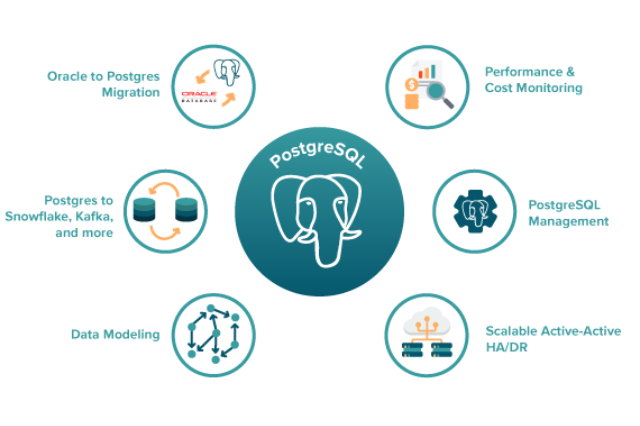

POSTGRESQL
Banco de dados
O PostgreSQL também é um gerenciador de banco de dados relacional Open Source, comumente utilizado para sistemas online, como Skype, Apple e o Metrô de São Paulo.
É considerada uma das alternativas mais avançadas do mercado, com recursos diferenciados e complexos, que permite que os usuários consigam ter maior facilidade de acessos e integridade transacional. Essa alternativa exige uma solução em hardware potente para não prejudicar o desenvolvimento.
O PostgreSQL possui uma capacidade de suportar um grande fluxo de dados, garantindo a segurança e estabilidade, além de um alto desempenho por um valor ainda mais acessível.